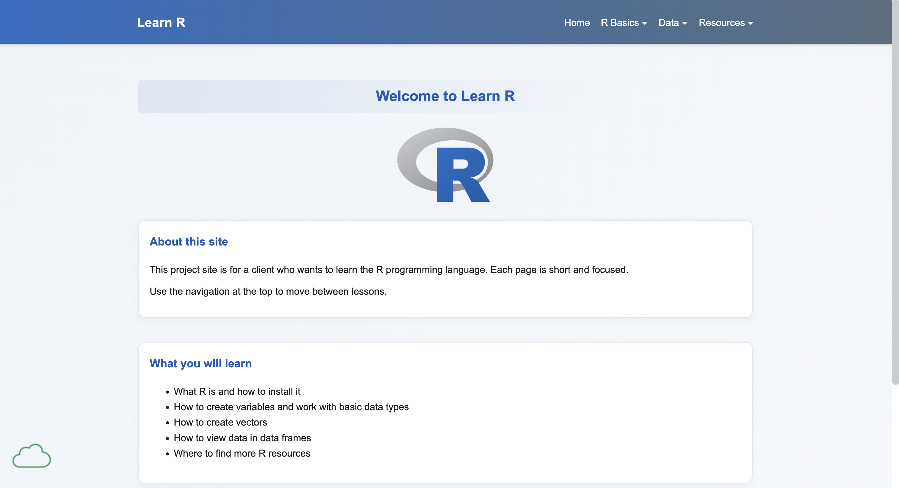
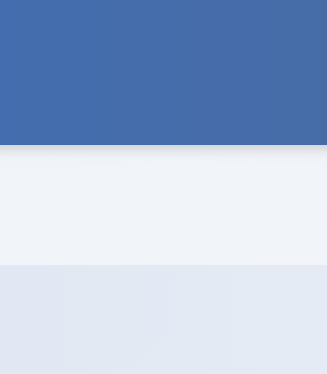
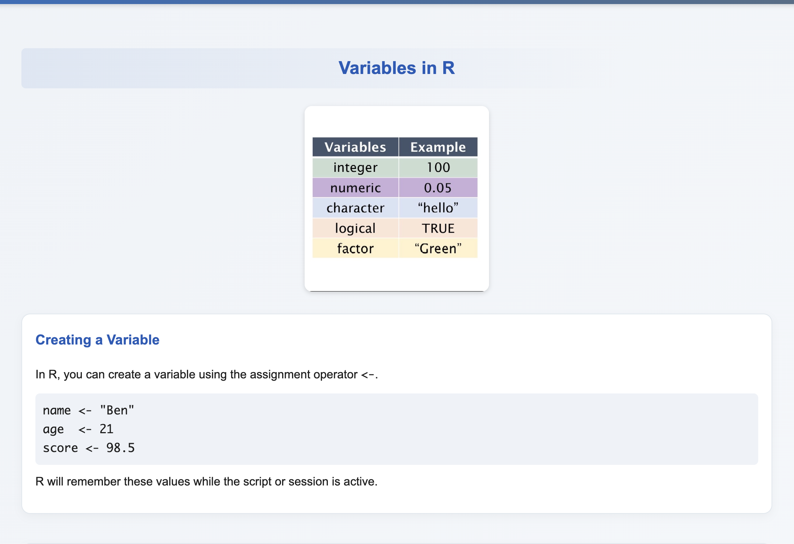
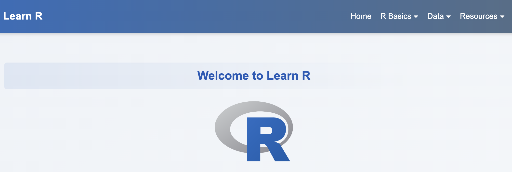
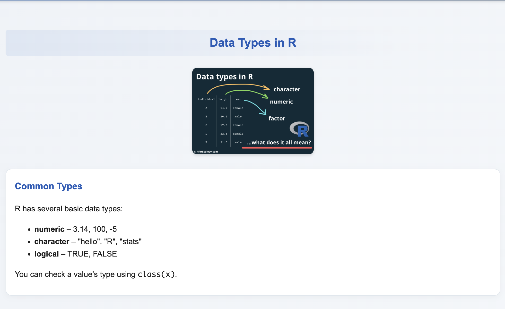
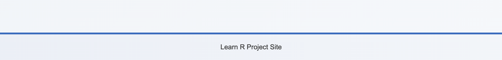

Peer Review 1
Client Project Evaluation
Student Name: Villalpando, Hector

Website Checklist Evaluation
General Page Requirements (from the top)
-
Direct Access: Your submission leads right to the
page to be reviewed (or if instructed the primary page with links to
the page or both)
Yes, the submission is easily accessible and the link on the spreadsheet leads right to the project, as well as the nav link on their main ITIS 3135 course page. -
File/Folder Naming: There are no spaces or
upper-cases in the file/folder names, including scripts, images,
etc.
Yes, with the exception of the 'HTMLInclude' script file.
Design
-
Readability: Page has sufficient contrast/font
sizing so as to be easy to read
100%, I'd actually say this is a strong point of their website. Everything is easy to read, has great contrast, and sized appropriately. -
CSS Standards: Page has site colors and fonts using
the standard .css file, unless this assignment requires a
unique/standalone/embedded one
Yes, all pages are using the .css file in styles/project.css.

Color Palette -
CRAP Principles:
- Contrast: Good contrast throughout. The blue header with white text is very readable. Main content uses dark text on white/light backgrounds which provides excellent readability. The blue headings stand out well against the light gray background. The color scheme is simple and effective.
- Repetition: Strong repetition of design elements. The blue color is consistently used in the header, all section headings ("Welcome to Learn R", "About this site", "What you will learn"), and the R logo. The white content boxes follow the same styling pattern. Navigation items are uniformly styled. This creates a cohesive, professional look throughout the page.
- Alignment: Clean alignment overall. Content is properly left-aligned within sections, the R logo and main heading are centered, and the navigation is right-aligned in the header. The layout follows a clear grid structure with consistent margins. Everything feels intentional and organized.
- Proximity: Good use of proximity. Related items are grouped together - navigation items cluster in the header, content sections are contained in separate white boxes with appropriate spacing between them. The bullet points are grouped together showing their relationship. One note I'd add is I like the use of white-space, it makes the pages less intimidating/overwhelming, which compliments the overall site purpose, education.

Example of CRAP Principles
Page Structure
-
Page Elements: Page has within it: Header, Main,
Footer, (optional) nav for main menu between header and main
Yes, all pages have header & main & footer & nav. -
Header Content: Header has site/brand header with
text in an h1
Not quite, the header has a site/brand name in a span tag, not an H1. -
Header Appropriateness:
- If this is a homework page it's likely something like Student Name * Course ID Course Name
- If this is a "branded page" it should be the brand/company
- DO NOT INCLUDE THE PAGE NAME IN THE HEADER
- Understand the difference between head, header, and heading

Page header -
Main Section: Main starts with name of page as an
h2 and does not include name of site/brand
Yes, the site has an appropriate h2 for each page's main. -
Brand Tagline: Page has brand tagline somewhere
(make up a slogan and include it on every page in a consistent
location)
No, I did not see a recurring tagline anywhere in their site.

Page main
Footer Requirements
-
Footer Menu: Page has footer with menu for user's
pages
Yes, the page has a footer, but no navigation menu in it. -
HTML Validation: Page has html validation
button/link and validates
No, just 'Learn R Project Site' text. -
CSS Validation: Page has css validation button/link
and validates
No, just 'Learn R Project Site' text.

Page footer
Client Project Specific Requirements (Pt. 2)
-
5 Pages Required: Site contains all 5 required
pages (Home, and 4 others relevant to client)
Including the landing page, the site has eight pages overall! -
Navigation: Consistent navigation across all pages
enabling single-click access
Yes, the site has a nice navigation bar with organized categories depending on the type of learning material. -
Dynamic Functionality - Form Validation: Contact
form with JavaScript validation (required fields, email format,
etc.)
No forms are on this site. -
Dynamic Functionality - jQuery-UI Tooltips:
Tooltips implemented on relevant elements
No tooltips are on this site. -
Dynamic Functionality - jQuery-UI Accordion:
Accordion implemented for organizing content
The site contains a header navigation bar with dynamic dropdown menus (accordion menus) that appear on hover. -
Dynamic Functionality - AJAX: AJAX functionality
for loading data (e.g., events from JSON)
No AJAX functionality is on this site. -
Client Requirements Met: Content accurately
reflects client's needs and goals
Overall, I would say the site accurately reflects the client's needs and goals of learning R. Everything is organized well and the content is presenting in a concise and efficient manor. I would say the only downside is the lack of in-depth explanations and content. However, this is to be expected, as something like learning a new programming language involves dozens and dozens of lessons, and these can be added overtime. The site provides a good foundation for further content.
Additional Observations & Suggestions
-
The Good:
The design is really clean and professional. The CRAP principles work well - good contrast makes everything readable, the blue color scheme is consistent throughout, everything is nicely aligned, and the white space makes the content easy to digest. The navigation with dropdown menus is smooth and intuitive. Having 8 pages shows solid effort, and the focused content is perfect for an educational site about learning R programming. -
The Bad:
A few things are missing: there's no recurring tagline, and the footer only has text without navigation or validation links. The header brand "Learn R" uses a span tag instead of an h1. Also, HTMLInclude.js has an uppercase letter in the filename. For dynamic features, the site has dropdown menus but is missing one more required feature (only 1 of the 2 required dynamic features is implemented). -
The Ugly:
The main concern is the empty footer and missing second dynamic feature. The footer needs navigation links and HTML/CSS validation buttons. For the dynamic functionality, you'll want to add one more feature - maybe a form with validation, tooltips or AJAX. -
Start:
Add a tagline that appears consistently on every page. Build out the footer with navigation links and validation buttons. Add one more dynamic feature - a contact form with JavaScript validation would work well, or you could add jQuery-UI tooltips on code examples, an accordion for organizing lessons, or AJAX to load content from JSON. Change the header brand to an h1 tag, and rename HTMLInclude.js to all lowercase. -
Stop:
The span tag in the header should be an h1 for better semantic HTML. Try to avoid uppercase letters in filenames. -
Continue:
Keep up the great work with the clean design and white space - it makes the site approachable for learners. The consistent color scheme and organized navigation structure work really well. The focused content is exactly what an educational site needs. You've built a solid foundation, just add those few missing pieces!